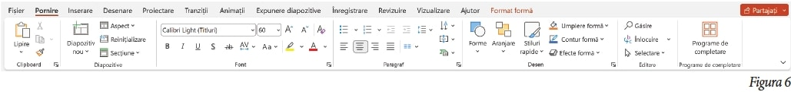

Lucrați în pereche. Alături de un coleg, deschide aplicațiile Microsoft Word și PowerPoint.
a) Ce grupe de comenzi observați pe panglica Pornire din aplicația Microsoft Word? (Figura 5)
b) Comparați panglica Pornire din Word cu cea din aplicația PowerPoint (Figura 6). Care sunt elementele comune? Dar cele diferite?
Observă panglica Inserare (Figura 7) și răspunde următoarelor întrebări: Din ce grupă de comenzi poți insera un număr de pagină? Dar o imagine?
Privește panglica Desenare (Figura 8) și răspunde următoarelor întrebări:
a) Ce unealtă ai putea folosi pentru a trasa o linie dreaptă?
b) Ce instrument ai folosi pentru a șterge o parte dintr-un desen?
Ce opțiune din meniul Proiectare (Figura 9) ai folosi pentru a aplica paginii o culoare?
Privește panglica de comenzi din meniul Aspect (Figura 10) și vei descoperi că de aici poți modifica aspectul
paginilor (dimensiune, orientare, margini), al paragrafelor (spațierea în jurul acestora) și al imaginilor (cum se
așază textul în jurul imaginilor, gruparea lor, rotirea acestora).
a) Ce comandă din această panglică vei folosi pentru a modifica dimensiunile paginii?
b) Dar pentru a modifica marginile documentului?
Ce filă de comenzi vei accesa, dacă ai nevoie de ajutor în utilizarea aplicației Microsoft Word?
10